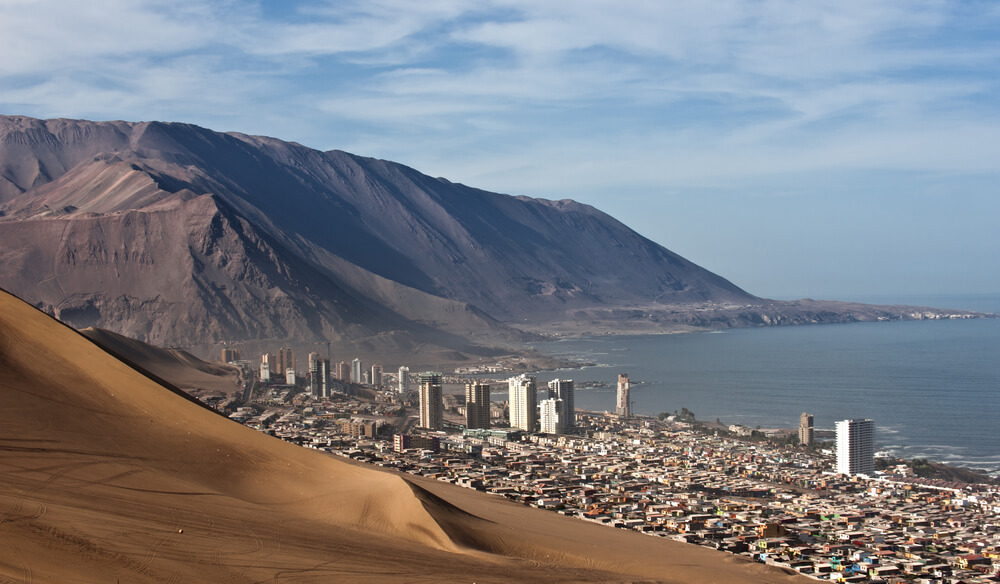

Centro UC de Encuestas y Estudios Longitudinales
Seguimiento de campo · 2026
Selecciona un proyecto para ver el seguimiento detallado del avance en terreno por fecha y región.
Seguimiento de manzanas completadas a nivel nacional. Empadronamiento longitudinal.

Seguimiento de encuestas completadas en las 7 comunas de la Región de Tarapacá.
Seguimiento de encuestas completadas en las comunas de la Región de Coquimbo.